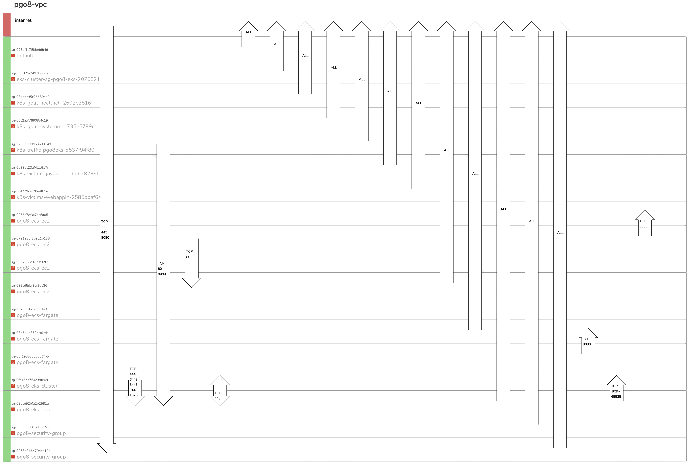

Playground One Configurations¶
The Playground One has a modular structure as shown in the following tree:
awsone
└── network (2-network)
├── ec2 (3-instances)
├── eks (4-cluster-eks)
| ├── eks-deployments (8-cluster-eks-deployments)
| └── scenarios (7-scenarios)
└── ecs (5-cluster-ecs)
As we can see, the configuration network is the base for the other configurations. It creates the VPC, Subnets, Route Tables, Security Groups, etc. One can choose to only create the EKS cluster, or ECS cluster, or even the full stack. Everything will reside in the same VPC.
Architecture: Example environment name pgo8

Security Groups: Example environment name pgo8

The following chapters describe the different configurations on a high level, refer the the dedicated documentation for more details.
Virtual Private Cloud and Network¶
Configuration located in awsone/2-network
This configuration defines a network with the most commonly used architecture, private and public subnets accross three availability zones. It includes everything what a VPC should have, this is amongst others an internet gateway, NAT gateway, security groups, etc. Since a VPC is cheap there's no real need to destroy the networking configuration everyday, just leave it as it is and reuse it the next time. This eases the handling of other components like Vision One XDR for Containers.
Virtual Instances¶
Configuration located in awsone/3-instances
Depends on awsone/2-network
Basically, a couple of EC2 instances are created with this configuration. Currently these are two linux and one windows instances.
If you store the agent installers for Server and Workload Security in 0-files the instances will connect to Vision One.
You can optionally drop any file or installer in the 0-files directory which will then be available in the ec2 instances download folder.
EKS Cluster¶
Configuration located in awsone/4-cluster-eks
Depends on awsone/2-network
So, this is my favorite part. This configuration creates an EKS cluster with some nice key features:
- Autoscaling from 1 to 10 nodes
- Nodes running as Spot instances to save money :-)
- ALB Load Balancer controller
- Kubernetes Autoscaler
- Optional Fargate profile
- Cluster is located in the private subnets
Cluster Deployments¶
Configuration located in awsone/8-cluster-deployments
Depends on awsone/4-cluster-eks
Currently, the following deployments are defined:
- Container Security
- Prometheus & Grafana
- Trivy
Scenarios¶
Configuration located in awsone/7-scenarios
Depends on awsone/4-cluster-eks
Currently, the following (vulnerable) deployments are defined:
- WebApp System-Monitor (see Escape to the Host System)
- WebApp Health-Check (see ContainerD Abuse)
- WebApp Hunger-Check (see Hunger Check)
- Java-Goof
- WebApp OpenSSL3
- Nginx
ECS Clusters¶
Configuration located in awsone/5-cluster-ecs
Depends on awsone/2-network
Here we're building an ECS cluster using EC2 instances and/or Fargate profile. Key features:
- Autoscaling group for spot instances when using the EC2 variant. On-demand autoscaler can be enabled in Terraform script.
- Fargate profile with spot instances. Fargate with on-demand instances can be enabled in Terraform script.
- ALB Load Balancer
- Automatic deployment of a vulnerable service (Java-Goof)